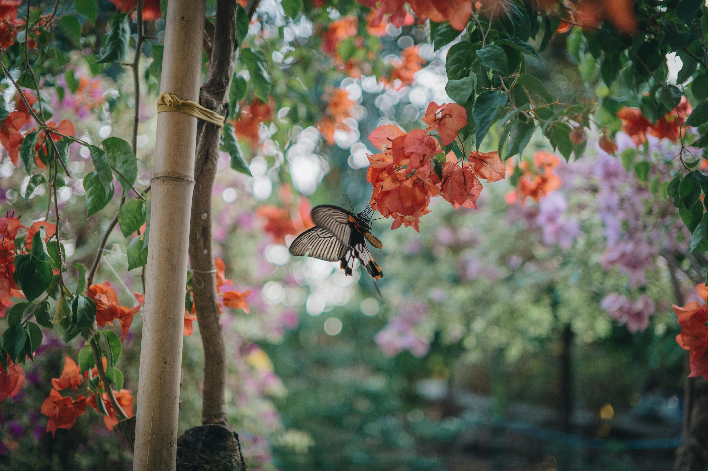

Welcome To Our Garden's Gallery
We call this page our diary because we highlight importance in our daily care with mother nature.
Our visitors favorite path to walk on. Just look at this vast view!

Oh, just look at how they flourish!

Our lovely creatures say hello!

Here we are carefully handling our plants.

Don't be scared of our insects! They only love nature just as much as we do.

Back to the homepage